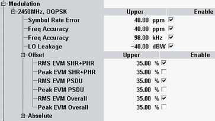

Modulation Limits
The modulation limits are defined in the following section. The default values present the conformance requirements, as described in "Modulation Requirements".

Modulation limits
Upper limits for the measurement results which characterize the modulation accuracy of packets. For a detailed description of the results, refer to "Statistical Modulation Results".
The limits apply to the "Current", "Average" and "Maximum" results.
- Symbol Rate Error: upper limit for the symbol rate error in ppm
- Frequency Accuracy: upper limit in ppm and kHz for the carrier frequency error. An upper limit of <x> kHz means that the measurement result must be in the range between –<x> kHz and +<x> kHz.
- EVM: upper limit for offset and absolute EVM. Limits for EVM within headers (SHR+PHR), payload (PSDU) and complete PPDU (overall) are specified. See also: "PHY Protocol Data Unit (PPDU) Structure".